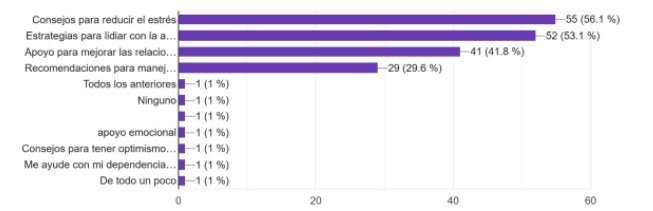

►
¿Está familiarizada con el concepto de inteligencia artificial (IA)?
De la muestra tomada a partir de la población determinada, se observa que
este resultado es muy conveniente y positivo para el desarrollo de la Inteligencia artificial (IA).
Esto da como significado que los encuestados están totalmente capacitados para entender y
aceptar los avances de la Inteligencia artificial en la vida cotidiana de los mismos. Es
importante tener claro que el nivel de conocimiento puede variar por la edad e interés personal
pero aun así es importante seguir alimentado a las personas sobre la Inteligencia artificial para
comprender mejor sus riesgos y beneficios.
►
¿Consideraría utilizar un robot con Inteligencia Artificial (IA) diseñado
para ofrecer consejos y estrategias para lidiar con problemas emocionales, como ansiedad,
estrés y pensamientos suicidas?
De la muestra tomada a partir de la población determinada, se observa que la
mayoría de los encuestados tienen una buena aceptación hacia la implementación de los
consejos para lidiar con los problemas emocionales, el resultado es pertinente con el interés en
la salud mental y la búsqueda impertinente para abordar los problemas emocionales. Añadir
estas estrategias significa un cambio positivo en la salud mental de las personas ya que sirven
para identificar y manejar los problemas emocionales, sin embargo, hay que tener en cuenta
que los consejos no son una solución efectiva.
►
¿Considera que este prototipo podría rivalizar con un psicólogo en
términos de capacidad para proporcionar servicios de salud mental a los adolescentes?
De la muestra tomada a partir de la población determinada, se observa que
las personas no aceptan totalmente a un prototipo capaz de competir con un psicólogo real,
teniendo gran desconformidad y confusión con el tema, demostrando que no darían total
confianza y plenitud a un prototipo. Pero solo una parte de los encuestados saben del desarrollo
extraordinario de la Inteligencia artificial y no están del todo seguras.
►
¿Entre una de estas dos fuentes de energía, cual sería más cómoda para su
uso?
De la muestra tomada a partir de la población determinada, los resultados
obtenidos demuestran la mayoría de personas se encuentran más cómodas usando baterías a
que cableado, esto debe ser a la seguridad y facilidad de la batería
►
¿Qué tipo de información o apoyo le gustaría recibir de un robot diseñado
para ayudar con problemas emocionales?

De la muestra tomada a partir de la población determinada, se observa que
los encuestados presentan una necesidad fundamental de apoyo emocional y el manejo de
problemas emocionales. Esto quiere decir que están conscientes que los problemas
emocionales son comunes y pueden a presentar un impacto significativo en la vida de las
personas, asimismo la implementación de las estrategias en el prototipo, podría ser un valioso
recurso para las personas que buscan apoyo con sus problemas emocionales, de igual manera
esto ayuda a garantizar que el prototipo será un valioso recurso para las personas que necesitan
apoyo emocional.
►
¿Qué características crees que son esenciales para un robot de apoyo
emocional eficaz?
De la muestra tomada a partir de la población determinada, los resultados
obtenidos demuestran que las personas necesitan que el prototipo este arraigado con emociones
humanas y no tenga carencia para entender los sentimientos asimismo que no carezca de
empatía, también que pueda mantener una conversación fluida y coherente que pueda satisfacer
las diferentes necesidades de las personas.
►
¿Preferiría que la interacción con el robot fuera principalmente a través de
texto, voz, o una combinación de ambas?
De la muestra tomada a partir de la población determinada, indican que las
personas se rigen más por un prototipo que cuente con un sistema funcional de voz ya que es
más cómodo y optimo, debido a que la voz básicamente es un medio de comunicación 100%
natural y gracias a esto permite una conversación más fluida y coherente con el prototipo y sus
sistemas informáticos, también por que el sistema de voz es más preciso que el sistema de texto
para las comprensiones del usuario, por ejemplo con el tono y ritmo que serán útiles para
interpretar las intenciones del usuario.
►
¿Tiene alguna inquietud sobre la seguridad de compartir información
personal con un robot de apoyo emocional?

De la muestra tomada a partir de la población determinada, indican que la
mayoría de los usuarios están dispuestos a compartir información, pero solo en caso de ser
seguro, esto se debe a que las personas están conscientes que sus datos personales tienen mucho
valor y quieren asegurarse que no sean usadas de forma indebida. Dicho comportamiento se
debe a que los usuarios tienen una responsabilidad moral con las personas para ayudarlos con
sus problemas
►
¿Cuánto valoraría usted un robot que pueda proporcionar consejos y
estrategias para lidiar con trastornos de salud mental, ansiedad, estrés y problemas de autoestima?

De la muestra tomada a partir de la población determinada, se da a conocer
que las personas consideran que el prototipo pueda abordar temas de la salud mental incluyendo
los consejos y estrategias, ya que las mismas pueden ayudar a las demás personas a comprender
y entender sus trastornos y a poder desarrollar unos mecanismos de defensa y obtener el apoyo
emocional necesario y requerido, ayudando a prevenir riesgos
►
¿Qué tipo de asistencia específica relacionada con la salud mental o las
relaciones personales le gustaría recibir de un robot como el descrito en el objetivo?
De acuerdo con la pregunta 10. De la muestra tomada a partir de la población
determinada, se refiere a que los usuarios se derivan más a un prototipo que les brinde más
apoyo emocional, pero fundamentalmente que cuente con coherencia y relacionado con las
emociones y sentimientos de las personas. Dicho resultado es significativo porque da a
entender que los usuarios valoran fundamentalmente la amplitud y la coherencia que ofrece el
sistema de apoyo emocional. Los usuarios cuentan con tener una gama amplia de consejos que
aborden una gran capacidad de problemas emocionales.